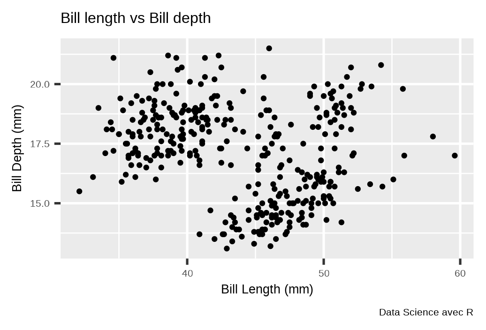

Ce module est une introduction [très rapide]{style=“color:#cc0000”}à R et au Tidyverse conçu pour répondre aux objectifs suivants:
comprendre ce qu’est R et le tidyverse;
créer et gérer un projet d’analyse de données;
importer des données Excel & textes plats;
manipuler, traiter un ensemble de données
générer des résumés statistiques sur un ensemble de données
visualisation statistique importantes.
export des analyses en tableaux, graphiques etc…
Bibliographies
Ce module n’est qu’une introduction rapide, la plupart de ce contenu est tiré de ses livres que voici. Ils sont disponibles en ligne gratuitement. Grand merci à ces auteurs. Mon coup de coeur c’est R for Data Science que je considère comme la bible
Développement web : Application web, API, Blog et Site web
Traitement de texte : Documents technique et scientifique : livres, rapports, articles, posters
R est forte de sa communauté qui la plupart du temps sont des chercheurs, étudiants. L’aide est disponible partout sur des blog, twitter suivre le hastag #rstats.
Tidyverse est une boîte à outils conçu pour faciliter, accelerer la partie traitement et analyse de données et se concentré sur les interprétations.
de l’importation des données
du recodage, nettoyage, traitement et inspection
de l’analyse et la visualisation, production de rapports
Partage des résultats d’analyses sous forme de page web (HTML), de pdf ou de site web
Le Tidyverse pour moi c’est aujourd’hui une philosophie, une façon moderne et efficiente de travailler avec les données
Astuces avant de commencer
La programmation est très exigeante et requiert un certain nombre de règles simple mais qui allègent énormément le workflow.
Des noms de dossiers sans espaces, sans caractères spéciaux
Les noms doivent être courts, évocateurs et ne comporter ni caractères spéciaux, espaces
Les chemins doivent être le plus cours possibles.
Les données d’entrées préférentiellement en textes, et bien structurées: une colonne une variable, une ligne une observation. (Tidy data principles)
Le plus important en programmation c’est de savoir :
plusieurs façon existent, et une plus simple est recherchée
être créatifs, curieux et aimer les défis
un langage de programmation est un outil (avoir les outils du menuisier ne fait de vous un )
Packages à installer
Les packages sont des collections de fonctions, de données développer et distribuer sur le CRAN ou sur un GIT. L’installation d’un package est relativement simple : Outils de gestion de packages ou via la commande install.packages().
L’un des pans importants en analyse de données, c’est comment passer du fichier au logiciel. Cette procédure est appeler Importation de données, ou Input en anglais. Plusieurs package, existent pour ça mais je montre deux points:
Un véritable couteau suisse pour importer les fichiers textes, est le package vroom. Une seule commande :
library(vroom)vroom(file ="chemin-du-fichier",col_names ="TRUE ou FALSE")
Cette commande devine les délimiteurs, les formats et tout. Plus besoin de se casser la tête.
Cette commande peut lire un fichier distant ( depuis un serveur directement dans R)
library(vroom)vroom(file ="lien-internet-vers-fichier",col_names ="TRUE ou FALSE")
dplyr, pour transformer et résumer le contenu des données
tidyr, pour transformer la structure des données de type tableau purrr, une mise à niveau des outils de programmation fonctionnelle de R base
tibble, un tableau de données amélioré
La philosophie du tidyverse
D’après Hadley Wickham (directeur scientifique de RStudio) permettre à l’analyste de se concentrer sur les questions de fond plutôt que sur les aspects techniques de l’analyse des données.
Le pipe %>%
Objectif
Le but du pipe est de vous aider à écrire le code d’une manière plus facile à lire et à comprendre.
Principe
\(x\) %>% \(f()\) est équivalent à \(f(x)\)
\(x\) %>% \(f(y)\) est équivalent à \(f(x, y)\)
\(x\) %>% \(f(y,.)\) est équivalent à \(f(y,x)\)
x<-3x <-sqrt(x)x <-log(x)
Grâce au pipe des opérations complexes pourront s’enchainées sans création de variables intermédiaires seul le resultat final compte ! Génial n’est-ce pas?
x %>%sqrt() %>%log()
Manipulation de données - dplyr
dplyr c’est quoi?
dplyr est un package du tidyverse. Il abrite de nombreuses fonctions qui facilitent la manipulation des données.
dplyr est donc une grammaire de la manipulation des données, fournissant un ensemble cohérent de verbes qui vous aident à résoudre les défis de manipulation de données les plus courants.
filter(): conserve les lignes qui satisfont vos conditions
select(): conserver ou exclure certaines colonnes
rename(): renommer les colonnes
relocate(): déplacer les colonnes
mutate(): ajouter une nouvelle colonne
Manipulation de données - dplyr
dplyr c’est quoi
dplyr est donc une grammaire de la manipulation des données, fournissant un ensemble cohérent de verbes qui vous aident à résoudre les défis de manipulation de données les plus courants.
group_by() + summarise(): obtenir des statistiques récapitulatives par groupe
across(): applique une fonction sur plusieurs colonnes
count(): trouver rapidement les décomptes pour différents groupes
case_when(): ifelse vectorisé
Note: Bien d’autres verbes sont disponibles mais les plus importants sont ceux là, nous allons les revisités individuellement.
Selection lignes - filter()
La fonction filter() est utilisée pour filtrer un tableau de données, en retenant toutes les lignes qui satisfont à vos conditions.
entrées : données et expréssion(s) de filtrage
sortie : génère un tibble sans modifier les données
Pratique : Charger les données gapminder et filtrer les données d’une année et ou d’un groupe de pays.
Ajout colonne - mutate()
mutate() permet d’ajouter une variable à un tableau de données à partir de données intra ou extra de celui-ci tout en conservant les autres variables. Le mot mutate prend donc tous sons sens.
Ajouter une nouvelle colonne à penguins avec la masse corporelle en g convertie en kg.
Utilisez relocate() pour changer la position des colonnes, en utilisant la même syntaxe que select() pour faciliter le déplacement de blocs de colonnes en une seule fois.
df <-tibble(a =1, b =1, c =1, d ="a", e ="a", f ="a")df %>%relocate(f)df %>%relocate(f,.before = c)df %>%relocate(c:f,.after = a)
Résumé de données
Pour obtenir des résumés de données, on utilisera la combinaison group_by() + summarise(). C’est le duo infernal du tidyverse.
Les données de gapminder contient beaucoup de pays (country) et variables dont l’espérance de vie (LifeExp). On peut être interresser par le calcul de la moyenne, de l’écart type ainsi que l’intervalle interquartile de l’espérance de vie par pays. Nous reviendrons sur les statistiques .
Voyez vous à quel point R est puissant ? Le pipe facilite la lecture, rend le code élégant.
La grande touche? Le tidyverse fait parler le code. Voilà pourquoi il faut bien l’apprendre.
Rendre tidy les données
Un jeu de données est dit tidy si il respecte les conditions de noms édictées plus haut, si une colonne représente une variable, une ligne un observation.
Pour des raisons pratiques ou de méconnaissance, la plupart des données issues de la vies réelles ne sont pas tidy. Cela surcharge d’avantage l’analyste car les données doivent être nettoyées, reformater au besoin. Nous verrons comment pivoter un jeux de données.
La statistique descriptive permet de résumer au mieux les données en calculant des paramètres bien précis. Elle permet également d’inspecter, de jeter un coup d’oeil rapide sur un jeu de données.
Les paramètres clés à calculer sont les suivants :
Paramètres de tendance centrale
Moyenne, médiane
Minimum, maximum
Quartiles (plus généralement quantiles)
Paramètre de formes, de dispersion
étendue, intervalle interquartile
écart type, variance, coefficient de variation
coeficient d’assymétrie, d’aplatissement
avg <-mean(x); med <-median(x) ; sd <-sd(x)q2 <-quantile(x, prob = .25); min <-min(x)max <-max(x);range <-rang(x); iqr <-IQR(x)
Statistique descriptive
La puissance de dlookr
# beaucoup de percentilegapminder %>%select(where(is.numeric),-year) %>%describe()# choixgapminder %>%select(where(is.numeric),-year) %>%describe(quantiles =c(.25,.50,.75))
Les analyses effectuées sous R peuvent être exporter, les options disponibles sont très variées mais le plus souvent on a besoin des sorties dans des fichiers textes plats ou Excel.
La visualisation est capitale en analyse de données. Elle permet de ressortir assez de caractéristiques des données et de représenter de façon visuelle les résultats. La librairie nouvelle génération de graphique est ggplot2.
Une syntaxe simple et intuitive :
ggplot(data =<DATA>,mapping =aes(x =<XVAR>, y =<YVAR>))+ geom_<TYPE>()<TYPE>: boxplot, line, point, histogram, density,...
Une grande possibilité de personnalisation (thèmes variées, possibilité de DIY
De beaux rendus
Visualisation de données
Nuages de points
Le nuage de points est particulièrement utile lorsque les valeurs des variables sur l’axe des y dépendent des valeurs de la variable de l’axe des x. Dans un nuage de points, les points sont placés sans être reliés
ggplot(data = penguins,mapping =aes(x =bill_length_mm,y = bill_depth_mm ) ) +geom_point()+labs(title ="Bill length vs Bill depth",caption ="Data Science avec R",x ="Bill Length (mm)",y ="Bill Depth (mm)" )+theme_gray(base_size =20)

Visualisation de données
Nuages de points
ggplot(data = penguins,mapping =aes(x =bill_length_mm,y = bill_depth_mm,color = species ) ) +geom_point()+labs(title ="Bill length vs Bill depth",caption ="Data Science avec R",x ="Bill Length (mm)",y ="Bill Depth (mm)" )+theme_gray(base_size =20)